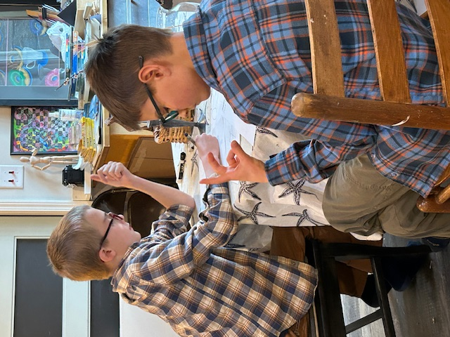
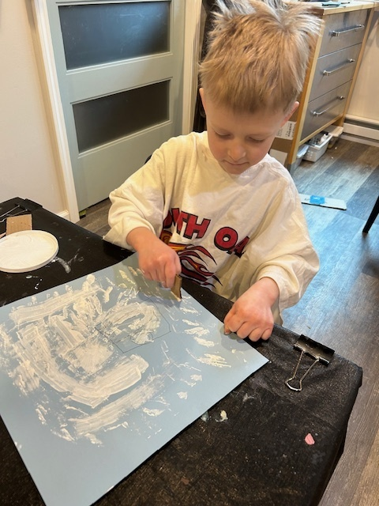

Class calendar
Fall 2026–2027 · Saint Joseph's AtelierSession dates, tuition, and studio policies for the current semester.
Art Foundations sessions are now 3½ hours, allowing solid work time after instruction, a mid-session snack/recess, stretch breaks, and cleanup. Classes are limited to 7 students. For availability or registration questions, please contact Donna.

Upcoming schedule
Fall dates below. Program descriptions live on the Classes page.
Tuition & payment
Art Foundations: $30.00 per session for the first child; $25.00 for a second sibling; $20.00 each for a third or fourth sibling (two children = $55/session; three = $75/session).
Little Lambs: $100.00 per student per semester ($25.00 per session; four sessions).
Barn Owls and Sacred Art: $30.00 per student per class.
Payment is requested by the first of each month rather than at each class. Paying once at the start of the semester is ideal when possible. If you have a special need, please consult with the instructor.
Art Foundations - Groups A, B & C
Bi-monthly sessions (8 per semester), Mondays, Wednesdays, or Fridays. One Friday morning section is offered this year. If your preferred group fills, contact Donna about a waitlist.
Group A - Mondays · 11:30 AM – 3:00 PM
August 3; September 14, 28; October 12*; November 2, 16, 30; December 7, 21
*One October meeting due to teacher obligations.
Group B - Wednesdays · 11:30 AM – 3:00 PM
September 2, 16, 30; October 14*; November 4, 18; December 9, 23
*One October meeting due to instructor obligation.
Group C - Fridays · 9:00 AM – 12:30 PM
September 4, 18; October 2, 16; November 6, 20; December 4, 18
Little Lambs (Ages 4–6)
Tuesdays · 9:00 AM – 11:15 AM · once per month per section (4 sessions per semester).
Section A - First Tuesdays
September 1; October 6; November 3; December 1
Section B - Third Tuesdays
September 15; October 13*; November 17; December 15
*October meets the second Tuesday due to instructor obligation.
Monthly & special programs
Silent Flight Barn Owls (Teens)
First Thursday of the month · skill refinement and independent work · $30.00 per class
Sacred Art Atelier and Scriptorium
Third Thursday of the month · 9:00 AM – 12:30 PM · $30.00 per class · ages 8–18 by interest / contact before admission
Art Café Days (Ages 7–18)
Open studio style · 9:30 AM – 2:30 PM · seats limited to 10; sign up two weeks in advance · $30.00–$45.00 per person depending on media
ART CAFE DAYS: Tuesday September 29th; Friday, October 9th; Wednesday November 11th; Monday, December 7th
Mary’s Lamp-Lighters (Moms & young adult women)
Second or Third Wednesday of the Month - Evenings 7-9:30 PM. Open Studio fee: $20.00 per session. Contact Donna for the current evening schedule and openings.
Make-up / keep-up policy
If your child will miss class, please call or text the morning before class starts. Make-up or catch-up dates can be arranged within the month missed when possible; please contact Donna to schedule. Advance notice for planned absences (for example, a family trip) is appreciated so a make-up can be pre-arranged.
Because of materials and set-up for each project, missed classes cannot be added on at the end of the semester.
